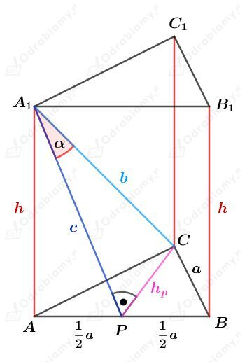
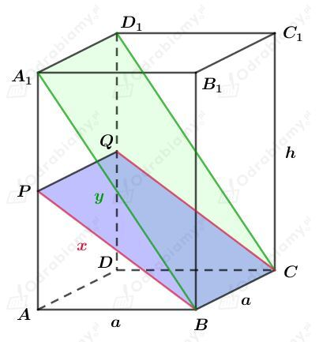
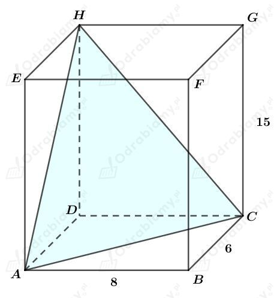
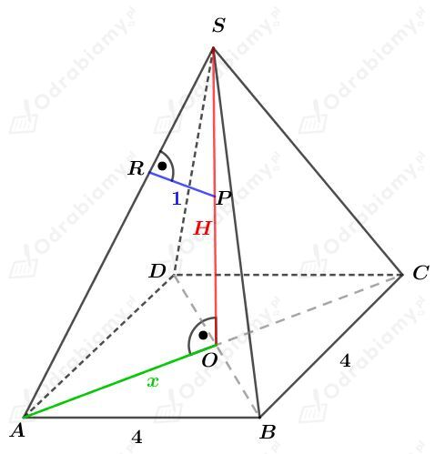
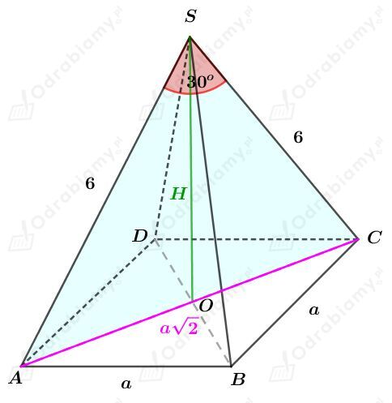
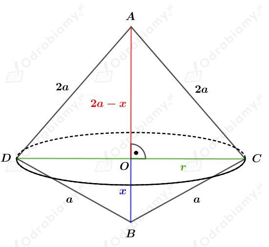

Rysunek:

Odcinek hp jest wysokością trójkąta równobocznego ABC, więc
Rozważmy trójkąt prostokątny PCA1. Korzystając z funkcji sinus mamy:
czyli
Korzystając z twierdzenia Pitagorasa dla trójkąta APA1 otrzymujemy:
Korzystając z twierdzenia Pitagorasa dla trójkąta PCA1 otrzymujemy:
Wyznaczmy objętość tego graniastosłupa. Mamy:
Rysunek:

Punkty P i Q są środkami - odpowiednio - krawędzi AA1 i DD1.
Z treści zadania wiemy, że pole prostokąta BCPQ wynosi 8√13. Mamy stąd:
Z treści zadania wiemy, że pole prostokąta BCD1A1 wynosi 8√13. Mamy stąd:
Korzystając z twierdzenia Pitagorasa dla trójkąta ABP otrzymujemy:
czyli
Korzystając z twierdzenia Pitagorasa dla trójkąta ABA1 otrzymujemy:
czyli
Otrzymujemy stąd:
Wyznaczmy długość wysokości h. Mamy:
Wyznaczmy objętość tego graniastosłupa. Mamy:
Rysunek:

Korzystając z twierdzenia Pitagorasa dla trójkąta ABC otrzymujemy:
Korzystając z twierdzenia Pitagorasa dla trójkąta CGH otrzymujemy:
Korzystając z twierdzenia Pitagorasa dla trójkąta AEH otrzymujemy:
Wyznaczmy obwód trójkąta ACH. Mamy:
Rysunek:

Punkt P jest środkiem wysokości tego ostrosłupa, więc
Odcinek x jest połową przekątnej kwadratu o boku długości 4, więc
Korzystając z twierdzenia Pitagorasa dla trójkąta SRP otrzymujemy:
Korzystając z podobieństwa trójkątów SRP i SOA otrzymujemy:
Wyznaczmy objętość tego ostrosłupa. Mamy:
Rysunek:

Korzystając z twierdzenia cosinusów dla trójkąta ACS otrzymujemy:
Korzystając z twierdzenia Pitagorasa dla trójkąta AOS otrzymujemy:
Wyznaczmy pole powierzchni przekroju ACS tego ostrosłupa. Mamy:
Wyznaczmy objętość tego ostrosłupa. Mamy:
Trójkąt równoramienny o podstawie długości a i ramieniu długości 2a obracamy wokół prostej zawierającej jedno z jego ramion.
Rysunek:

Korzystając z twierdzenia Pitagorasa dla trójkąta OCA otrzymujemy:
Korzystając z twierdzenia Pitagorasa dla trójkąta BCO otrzymujemy:
czyli podstawiając r2=4ax-x2 mamy:
więc wracając do równania otrzymanego z twierdzenia Pitagorasa mamy:
Wyznaczmy objętość tak otrzymanej bryły. Mamy:
Dany jest stożek przedstawiony na rysunku w podręczniku.
Powierzchnia boczna stożka po rozwinięciu jest półkolem o promieniu długości 10. Obliczmy pole powierzchni bocznej tego stożka. Mamy:
Tworząca tego stożka ma zatem również długość 10. Niech r będzie długością promienia podstawy tego stożka. Mamy stąd:
Obliczmy długość cięciwy AB podstawy tego stożka. Korzystając z twierdzenia cosinusów dla trójkąta ABO mamy:
Wyznaczmy cos∢ASB. Korzystając z twierdzenia cosinusów dla trójkąta ABS mamy: